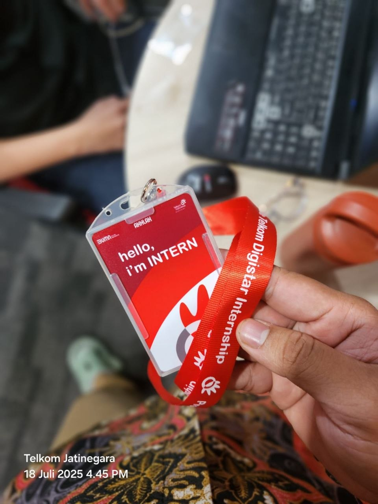

Case file 05Telkom Indonesia · 2025
Internal system
Log & observability
Monitoring operasional berbasis ELK Stack
Saat magang di Telkom Indonesia, saya mengolah log pemeriksaan kontrol TI (ITGC) dan Kubernetes. Hasilnya disusun menjadi dashboard Kibana agar aktivitas operasional lebih mudah dipantau.
- Input
- Log operasional dari beberapa sumber dengan struktur yang belum seragam.
- Proses
- Saya melakukan parsing, menyusun field, memeriksa hasil tampilannya, lalu membuat dashboard.
- Output
- Dashboard monitoring dan keluaran log yang dapat dipakai pada tahap otomasi audit berikutnya.



14
Catatan privasi. Tangkapan layar daftar dashboard ini ditampilkan dengan izin. Data log, nama host, dan isi dashboard internal tetap tidak saya publikasikan.